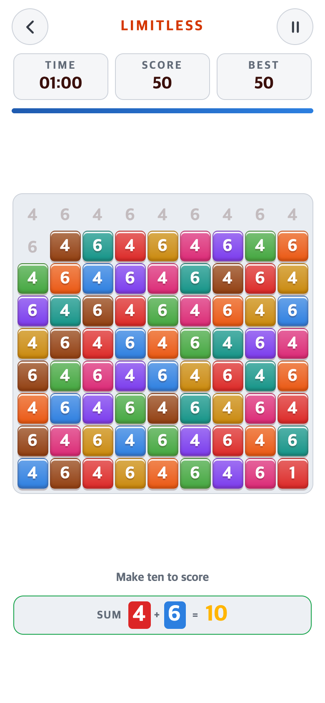
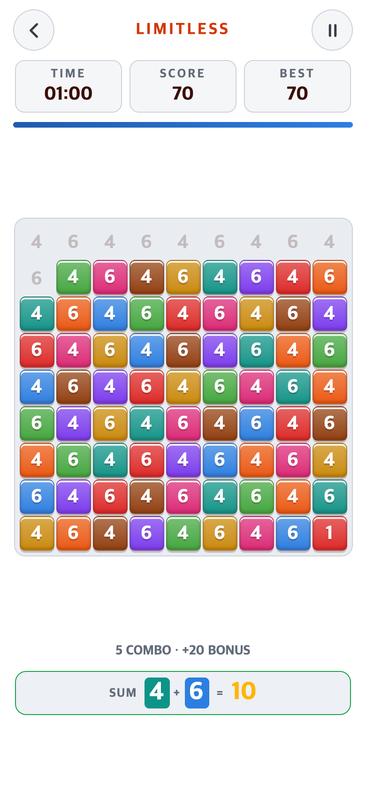
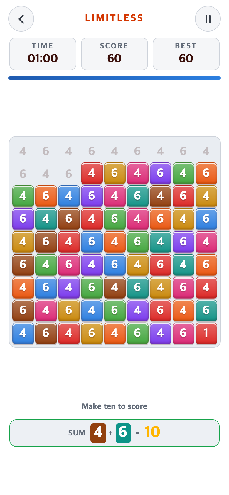
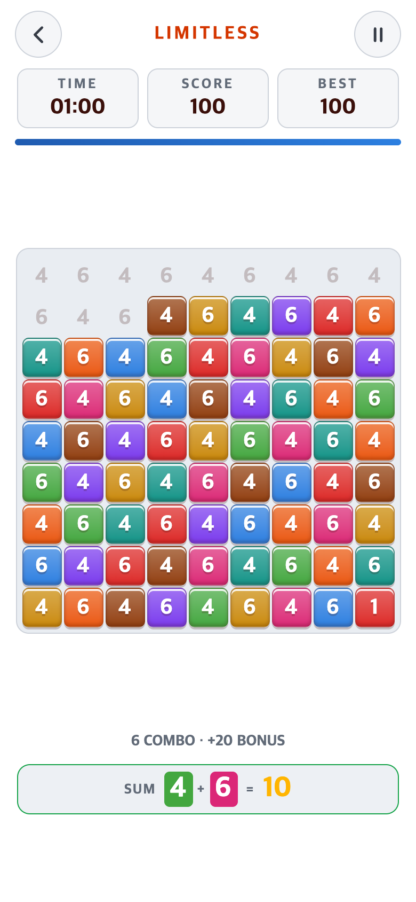
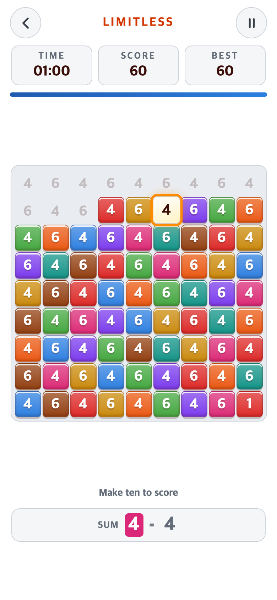
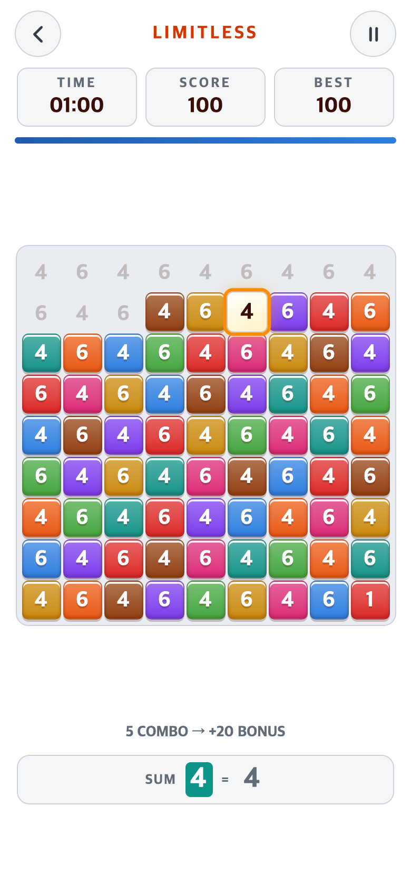

LIMITLESS · 5콤보부터 정답마다 +20점
정답·판 교체에는 유지, 선택 취소·오답에는 초기화. 흰색/회색 UI와 원래 컬러 블록은 유지했다.
390×844 CSS px/DPR 2. Android 프레임 모의검사이며 실제 기기 화면은 아니다. 4/6 반복 보드·시간 고정의 검사 조건이다.
5번째 정답
전 · 50점 / 추가 점수 없음
후 · 70점 / 5 COMBO · +20 BONUS
6번째 정답에도 +20점
전 · 60점
후 · 100점 / 6 COMBO · +20 BONUS
선택 중 블록 하나를 다시 눌러 취소
전 · 선택 하나만 취소, 추가 점수 규칙 없음
후 · 콤보 0, 기존 점수/시간과 남은 선택 유지
연구 기록·설계와 검증 한계 · 최종 검사 결과 · 첫 검사 결과 보존